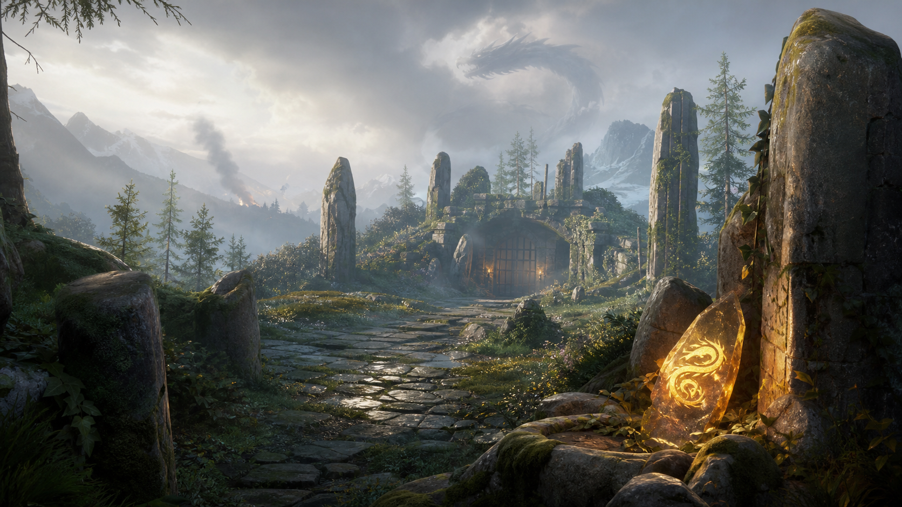

Explore, survive, return to camp, prepare, go deeper.
A compact fantasy RPG for mobile and PC. Not a base-builder and not a Skyrim clone.
The first slice proves a short expedition, while the full concept defines how to grow
regions, encounters, companions, factions, loot, perks, and dragon mystery beats later.
Mobile + PC2-5 min useful beatCamp supports explorationContent template driven

HP 30/30Resolve 10Supplies 3Gold 12
Missing ScoutSearch the standing stones near Moss-Covered Ruins.
Found Herbs +2 / Dragon Omen +1
Design Pillars
Big adventure in short sessions: one useful RPG beat in 2-5 minutes.
Exploration first: camp is rest/craft/talk/level, not base management.
Premium clarity: readable fantasy UI, visible cause and reward.
Long-Term Promise
New regions are built from node, encounter, reward, and camp response templates.
Dragon progression starts as mystery and becomes rare power, not collection.
Companions reveal routes, improve checks, and create camp story beats.
Factions change routes, services, and quest outcomes after the first region.
Current tier: fake-shot. This is a review-ready visual direction: generated backgrounds plus
HTML/CSS UI overlay. It is not a runtime-ready asset pack yet.
Ruins screen proves first-person fantasy encounter.
UI overlay proves resources, actions, reward, and camp state.
Future growth
Long-Term Progression
Scalable content
Content Model
Data-backed
Economy And Stats
Navigation
UI/UX Map
First challenge
First Combat
Prototype plan
Iteration Roadmap
Refs: Borrow
Skyrim: province fantasy, ruins, loot, hero growth.
The Quest: compact first-person RPG structure.
Pocket Survivor: mobile node map, events, survival pressure.
BG3/NWN2: camp as story/preparation rhythm.
Refs: Avoid
Full open-world scope.
Base-builder room management.
Heavy survival punishment.
Copying protected names, symbols, classes, lore.
Risk Gates
Core not sticky: player must want one more route.
Camp steals focus: camp must lead back to map.
Too much survival: resources create pressure, not punishment.
Generic fantasy: dragon-mark/relic must be recognizable.
Manual Review Questions
Do you want to click the next route after the first reward?
Is camp useful without becoming a separate management game?
Does Dragon Omen create curiosity?
Can new content be produced from the templates?
Next chat
Implementation Scope
First discover build/run commands. Then build: province map -> ruins encounter ->
Ruin Wolf combat -> safe camp -> rest/craft/talk -> unlock next route.